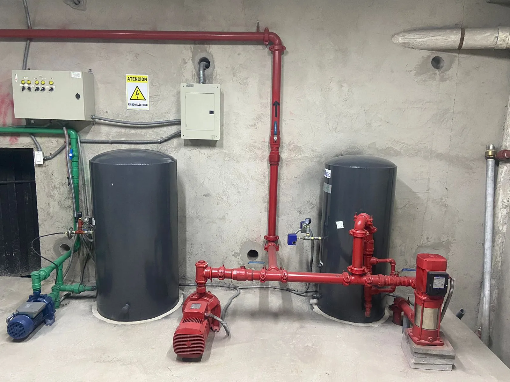
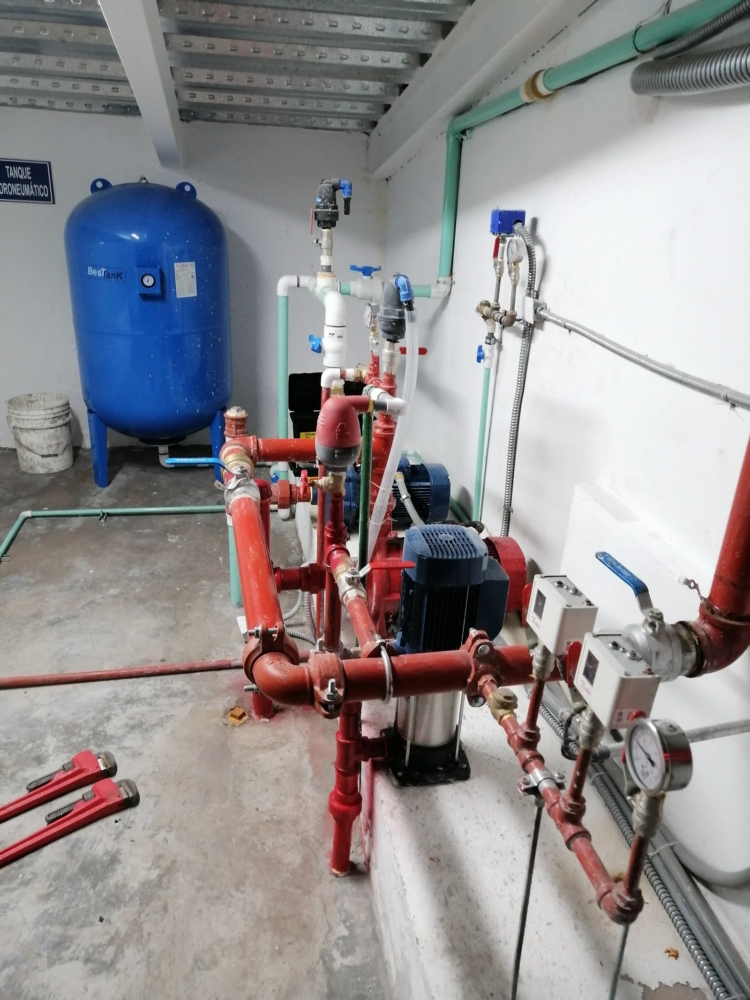
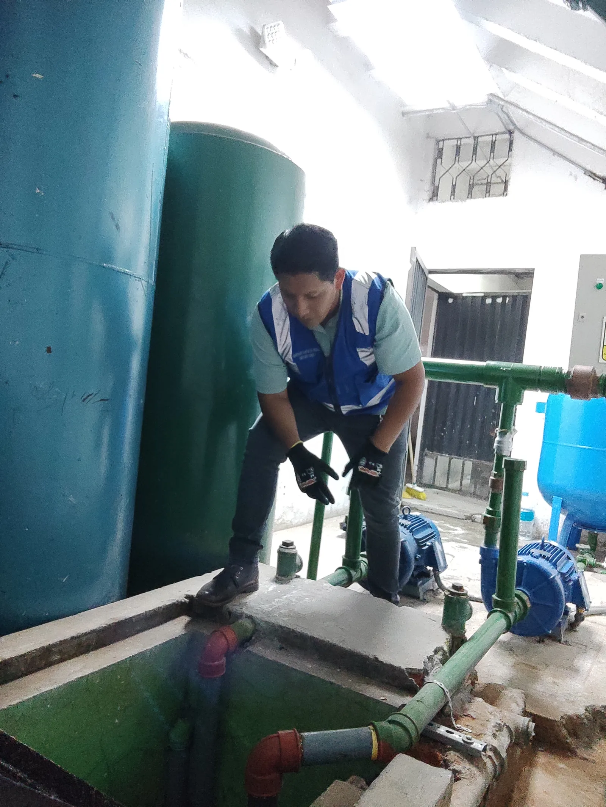
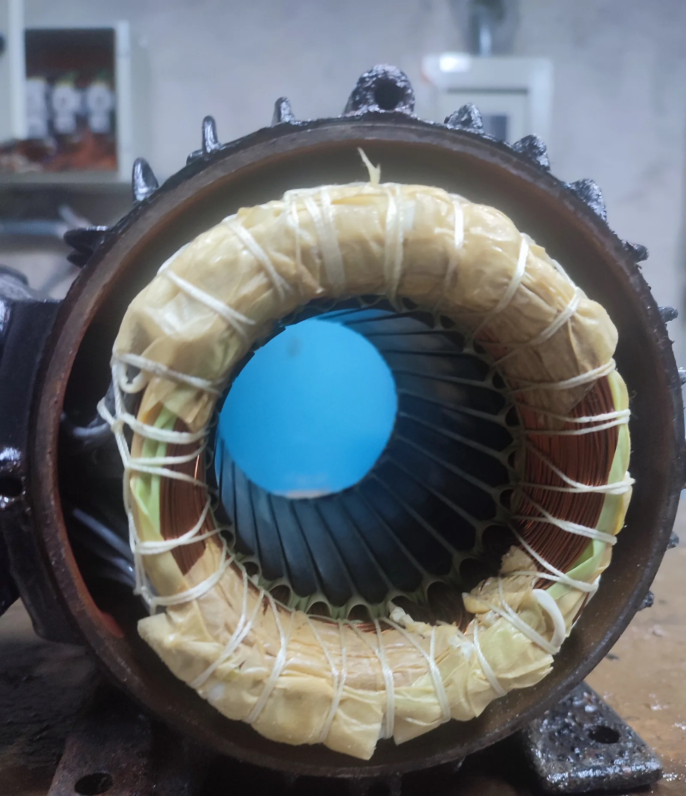
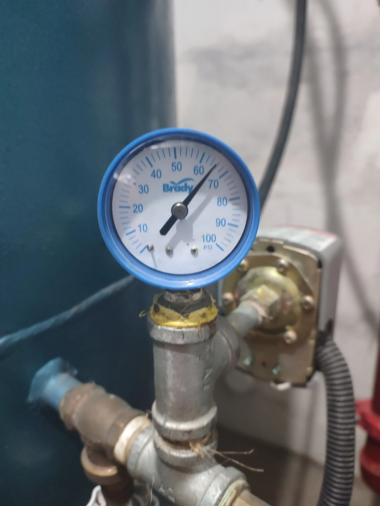
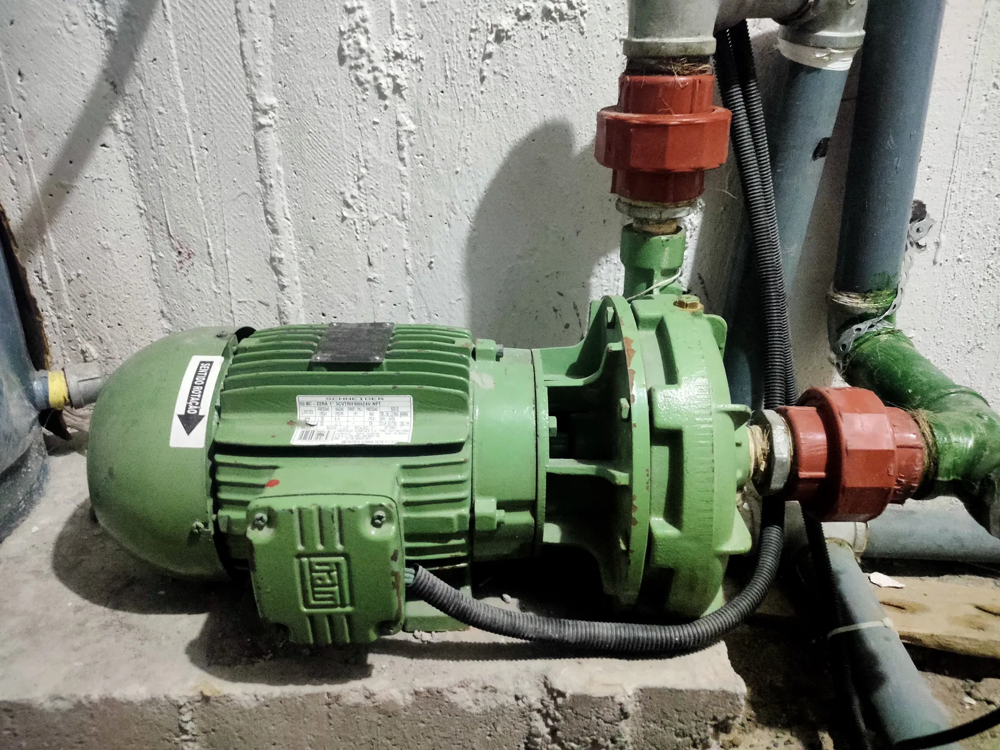

Bomba que no enciende
Puede estar relacionado con alimentación eléctrica, protecciones, contactores, sensores, conexiones o una condición interna del motor o la bomba.
Diagnóstico técnico para edificios, conjuntos residenciales, casas, locales comerciales y pequeñas empresas con baja presión, bombas que no arrancan o sistemas hidroneumáticos inestables.
Visita técnica GRATIS en Quito y valles. Informe de semaforización en 24 horas para sustentar el gasto ante su directiva. Factura y 6 meses de garantía.

Quedarse sin agua o sin presión de un momento a otro complica el día a todos. Estas son las señales más frecuentes con las que nos llaman:
Una misma señal puede tener causas distintas. Estas referencias ayudan a describir la falla, pero la causa debe confirmarse mediante inspección y pruebas.
Puede estar relacionado con alimentación eléctrica, protecciones, contactores, sensores, conexiones o una condición interna del motor o la bomba.
Puede estar relacionada con regulación, pérdida de rendimiento, fugas, obstrucciones, válvulas, nivel de cisterna o demanda del sistema.
Puede estar relacionado con una presión de parada no alcanzada, consumo permanente, fuga, válvula defectuosa o desempeño insuficiente.
Puede estar relacionado con la precarga o membrana del tanque, regulación del presostato, fugas o un volumen de acumulación insuficiente.
Puede estar relacionado con rodamientos, desalineación, cavitación, fijaciones, impulsor, tuberías o condiciones de succión.
Puede estar relacionada con entrada de aire, válvula de pie, uniones, nivel de agua o problemas en la línea de succión.
Una fuga puede estar relacionada con el sello, juntas, conexiones, eje o condiciones de operación; conviene identificar su origen antes de intervenir.
Puede estar relacionado con pérdida de precarga, válvula de aire, membrana o condiciones de configuración del sistema.
Lecturas erráticas o cambios de presión fuera de lo esperado pueden estar relacionados con regulación, obstrucción, desgaste o conexión del instrumento.
Puede estar relacionado con protecciones, contactores, cableado, selector, relés, señal de nivel o alimentación eléctrica.
Fotografías de sistemas y componentes intervenidos por ISIYER. Los captions describen únicamente lo visible, sin atribuir fallas, resultados o clientes.





El alcance se define después de revisar el equipo, la instalación y la condición reportada. La intervención puede abarcar componentes hidráulicos, mecánicos y eléctricos.
Inspección de la condición reportada y pruebas aplicables al sistema.
Revisión y reparación de bombas centrífugas y periféricas según su condición.
Revisión programada para identificar desgaste, desviaciones y necesidades de ajuste.
Intervención sobre fallas confirmadas y componentes incluidos en el alcance.
Revisión de compatibilidad, conexiones y funcionamiento de la bomba instalada.
Mantenimiento de bombas, tanques de presión, control e interconexiones.
Revisión del tanque y carga de aire conforme a la configuración del sistema.
Inspección de regulación, lectura, conexión y respuesta de los instrumentos.
Revisión de control, alimentación, maniobra y protecciones asociadas al bombeo.
Revisión de nivel, válvulas, tuberías, uniones y condiciones de aspiración.
Disponible cuando forma parte del servicio contratado y del alcance acordado.
ISIYER evalúa el sistema de bombeo completo, no solamente la bomba aislada. La revisión se realiza según el tipo de sistema y alcance del diagnóstico.
Esto permite relacionar la condición del equipo con la succión, la presión, el control eléctrico, el tanque y la disponibilidad de agua en la cisterna.
La información inicial ayuda a preparar la revisión. El alcance final depende de la inspección y de las condiciones encontradas.
Atendemos sistemas de abastecimiento y presión de agua para distintos tipos de inmuebles y operaciones en Quito y valles.
Atendemos en Quito y valles, incluyendo Quito Norte, Ponceano, Carcelén, El Condado, Calderón, Cumbayá, Tumbaco, Conocoto, Sangolquí y Rumiñahui.
Respuestas generales para describir la condición del sistema. El diagnóstico depende de mediciones e inspección en cada instalación.
Puede haber pérdida de cebado, entrada de aire, bajo nivel de cisterna, una válvula cerrada o defectuosa, obstrucción, giro incorrecto o desgaste hidráulico. Se debe revisar la succión y la bomba antes de concluir la causa.
Puede estar relacionada con demanda, regulación, tanque, bomba, tuberías, válvulas, fugas, nivel de cisterna o control. La revisión debe considerar el sistema completo y la presión en distintos puntos.
Los ciclos cortos pueden estar relacionados con precarga insuficiente, membrana del tanque, ajustes del presostato, fugas o capacidad de acumulación. La presión de arranque y parada debe medirse.
Los arranques frecuentes o una presión inestable pueden ser señales, pero no son concluyentes. La precarga se verifica con un procedimiento adecuado y el sistema hidráulico sin presión.
Sí. ISIYER revisa bombas centrífugas, bombas periféricas y motores eléctricos para definir si el equipo es reparable y qué componentes requiere el trabajo.
Sí, cuando forman parte del alcance. Se pueden revisar alimentación, protecciones, contactores, relés, selectores, cableado y señales de nivel asociadas al bombeo.
Sí. La atención está orientada especialmente a sistemas de agua para edificios y conjuntos, además de casas, locales, oficinas, pequeñas empresas e instituciones.
Depende del daño, disponibilidad de repuestos, condición del motor y partes hidráulicas, compatibilidad con el sistema y costo de la intervención. La decisión se plantea después del diagnóstico.
Escriba por WhatsApp o llame al 098 388 1253. Envíe fotografías, ubicación y una descripción de la falla para orientar la información inicial y coordinar la atención.
Antes de aprobar un gasto ante una directiva o una asamblea conviene saber a quién se contrata. Estos son nuestros respaldos.
Envíenos fotografías y una descripción del problema para orientar la revisión inicial y coordinar la atención técnica en Quito.